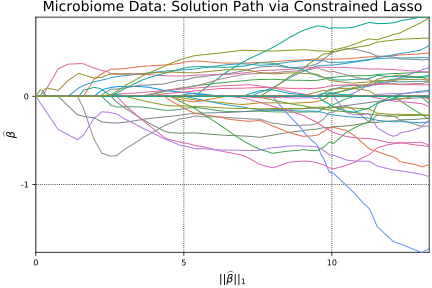

Microbiome Data
Section 6.3
Our last real data application with the constrained lasso uses microbiome data. Here the problem is to
\[\begin{align}
& \text{minimize} \hspace{1em} \frac 12||\boldsymbol{y}-\boldsymbol{X\beta}||^2_2 + \rho\Big(||\boldsymbol{\beta}||_1 + \frac{1-\alpha}{2}||\boldsymbol{\beta}||_2^2\Big) \\
& \text{subject to} \hspace{1em} \sum_j \beta_j = 0
\end{align}\]
where $\alpha = 1$. Hence this problem is reduced to the constrained lasso.
## load & organize data
zerosum = readcsv("data/zerosum.csv", header=true)[1]
# extract data
y = zerosum[:, 1]
X = zerosum[:, 2:end]
# extract dimensions
n, p = size(X)
## model set-up
# set up equality constraints
Aeq = ones(1, p)
beq = [0]
m1 = size(Aeq, 1)
## constrained Lasso solution path
# estimate solution path
@time β̂path, ρpath, = lsq_classopath(X, y; Aeq = Aeq, beq = beq)
# scale the tuning parameter to match the zeroSum formulation (which
# divides the loss fuction by 2n instead of just 2
newρpath = ρpath ./ n
# @show β̂path[:, end]
# @show ρpath
# calculate L1 norm along path
norm1path = zeros(size(β̂path, 2))
for i in eachindex(norm1path)
norm1path[i] = norm(β̂path[:, i], 1)
end
nothing # hideWARNING: Adding a small ridge penalty (default is 1e-4) since n < p
WARNING: ρridge must be positive, switching to default value (1e-4)
Problem
Name :
Objective sense : min
Type : LO (linear optimization problem)
Constraints : 322
Cones : 0
Scalar variables : 321
Matrix variables : 0
Integer variables : 0
Optimizer started.
Interior-point optimizer started.
Presolve started.
Linear dependency checker started.
Linear dependency checker terminated.
Eliminator started.
Freed constraints in eliminator : 320
Eliminator terminated.
Eliminator - tries : 1 time : 0.00
Lin. dep. - tries : 1 time : 0.00
Lin. dep. - number : 0
Presolve terminated. Time: 0.00
Interior-point optimizer terminated. Time: 0.00.
Optimizer terminated. Time: 0.00
Interior-point solution summary
Problem status : PRIMAL_AND_DUAL_FEASIBLE
Solution status : OPTIMAL
Primal. obj: 0.0000000000e+00 nrm: 0e+00 Viol. con: 0e+00 var: 0e+00
Dual. obj: 0.0000000000e+00 nrm: 1e+00 Viol. con: 0e+00 var: 0e+00
Basic solution summary
Problem status : PRIMAL_AND_DUAL_FEASIBLE
Solution status : OPTIMAL
Primal. obj: 0.0000000000e+00 nrm: 0e+00 Viol. con: 0e+00 var: 0e+00
Dual. obj: 0.0000000000e+00 nrm: 1e+00 Viol. con: 0e+00 var: 0e+00
WARNING: isnan{T <: Number}(x::AbstractArray{T}) is deprecated, use isnan.(x) instead.
Stacktrace:
[1] depwarn(::String, ::Symbol) at ./deprecated.jl:70
[2] isnan(::Array{Float64,1}) at ./deprecated.jl:57
[3] populate_solution!(::Mosek.MosekMathProgSolverInterface.MosekMathProgConicModel, ::Convex.Problem, ::Dict{UInt64,Tuple{Int64,Int64}}, ::Array{Convex.ConicConstr,1}) at /Users/juhyun-kim/.julia/v0.6/Convex/src/solution.jl:118
[4] #solve!#25(::Bool, ::Bool, ::Bool, ::Function, ::Convex.Problem) at /Users/juhyun-kim/.julia/v0.6/Convex/src/solution.jl:38
[5] #solve!#24(::Array{Any,1}, ::Function, ::Convex.Problem, ::Mosek.MosekMathProgSolverInterface.MosekSolver) at /Users/juhyun-kim/.julia/v0.6/Convex/src/solution.jl:13
[6] #find_ρmax#61(::Array{Float64,2}, ::Array{Int64,1}, ::Array{Float64,2}, ::Array{Float64,1}, ::Array{Bool,1}, ::Mosek.MosekMathProgSolverInterface.MosekSolver, ::Function, ::Array{Float64,2}, ::Array{Float64,1}) at /Users/juhyun-kim/Desktop/workspace/classo/ConstrainedLasso/src/classopath.jl:681
[7] (::ConstrainedLasso.#kw##find_ρmax)(::Array{Any,1}, ::ConstrainedLasso.#find_ρmax, ::Array{Float64,2}, ::Array{Float64,1}) at ./<missing>:0
[8] #lsq_classopath#2(::Array{Float64,2}, ::Array{Int64,1}, ::Array{Float64,2}, ::Array{Float64,1}, ::Float64, ::Array{Bool,1}, ::Mosek.MosekMathProgSolverInterface.MosekSolver, ::Function, ::Array{Float64,2}, ::Array{Float64,1}) at /Users/juhyun-kim/Desktop/workspace/classo/ConstrainedLasso/src/classopath.jl:92
[9] (::ConstrainedLasso.#kw##lsq_classopath)(::Array{Any,1}, ::ConstrainedLasso.#lsq_classopath, ::Array{Float64,2}, ::Array{Float64,1}) at ./<missing>:0
[10] eval(::Module, ::Any) at ./boot.jl:235
[11] #8 at /Users/juhyun-kim/.julia/v0.6/Documenter/src/Expanders.jl:459 [inlined]
[12] cd(::Documenter.Expanders.##8#10, ::String) at ./file.jl:70
[13] withoutput(::Documenter.Expanders.##7#9{Documenter.Documents.Page}) at /Users/juhyun-kim/.julia/v0.6/Documenter/src/Utilities/Utilities.jl:587
[14] runner(::Type{Documenter.Expanders.ExampleBlocks}, ::Base.Markdown.Code, ::Documenter.Documents.Page, ::Documenter.Documents.Document) at /Users/juhyun-kim/.julia/v0.6/Documenter/src/Expanders.jl:457
[15] dispatch(::Type{Documenter.Expanders.ExpanderPipeline}, ::Base.Markdown.Code, ::Documenter.Documents.Page, ::Documenter.Documents.Document) at /Users/juhyun-kim/.julia/v0.6/Documenter/src/Selectors.jl:164
[16] expand(::Documenter.Documents.Document) at /Users/juhyun-kim/.julia/v0.6/Documenter/src/Expanders.jl:29
[17] dispatch(::Type{Documenter.Builder.DocumentPipeline}, ::Documenter.Documents.Document) at /Users/juhyun-kim/.julia/v0.6/Documenter/src/Selectors.jl:164
[18] cd(::Documenter.##2#3{Documenter.Documents.Document}, ::String) at ./file.jl:70
[19] #makedocs#1(::Bool, ::Array{Any,1}, ::Function) at /Users/juhyun-kim/.julia/v0.6/Documenter/src/Documenter.jl:198
[20] (::Documenter.#kw##makedocs)(::Array{Any,1}, ::Documenter.#makedocs) at ./<missing>:0
[21] include_from_node1(::String) at ./loading.jl:569
[22] include(::String) at ./sysimg.jl:14
[23] process_options(::Base.JLOptions) at ./client.jl:305
[24] _start() at ./client.jl:371
while loading /Users/juhyun-kim/Desktop/workspace/classo/ConstrainedLasso/docs/make.jl, in expression starting on line 237
WARNING: sqrt{T <: Number}(x::AbstractArray{T}) is deprecated, use sqrt.(x) instead.
Stacktrace:
[1] depwarn(::String, ::Symbol) at ./deprecated.jl:70
[2] sqrt(::Array{Float64,1}) at ./deprecated.jl:57
[3] #lsq_constrsparsereg#1(::Array{Float64,2}, ::Array{Int64,1}, ::Array{Float64,2}, ::Array{Float64,1}, ::Array{Float64,1}, ::Array{Bool,1}, ::Mosek.MosekMathProgSolverInterface.MosekSolver, ::Bool, ::ConstrainedLasso.#lsq_constrsparsereg, ::Array{Float64,2}, ::Array{Float64,1}, ::Float64) at /Users/juhyun-kim/Desktop/workspace/classo/ConstrainedLasso/src/constrsparsereg.jl:63
[4] (::ConstrainedLasso.#kw##lsq_constrsparsereg)(::Array{Any,1}, ::ConstrainedLasso.#lsq_constrsparsereg, ::Array{Float64,2}, ::Array{Float64,1}, ::Float64) at ./<missing>:0
[5] #lsq_classopath#2(::Array{Float64,2}, ::Array{Int64,1}, ::Array{Float64,2}, ::Array{Float64,1}, ::Float64, ::Array{Bool,1}, ::Mosek.MosekMathProgSolverInterface.MosekSolver, ::Function, ::Array{Float64,2}, ::Array{Float64,1}) at /Users/juhyun-kim/Desktop/workspace/classo/ConstrainedLasso/src/classopath.jl:96
[6] (::ConstrainedLasso.#kw##lsq_classopath)(::Array{Any,1}, ::ConstrainedLasso.#lsq_classopath, ::Array{Float64,2}, ::Array{Float64,1}) at ./<missing>:0
[7] eval(::Module, ::Any) at ./boot.jl:235
[8] #8 at /Users/juhyun-kim/.julia/v0.6/Documenter/src/Expanders.jl:459 [inlined]
[9] cd(::Documenter.Expanders.##8#10, ::String) at ./file.jl:70
[10] withoutput(::Documenter.Expanders.##7#9{Documenter.Documents.Page}) at /Users/juhyun-kim/.julia/v0.6/Documenter/src/Utilities/Utilities.jl:587
[11] runner(::Type{Documenter.Expanders.ExampleBlocks}, ::Base.Markdown.Code, ::Documenter.Documents.Page, ::Documenter.Documents.Document) at /Users/juhyun-kim/.julia/v0.6/Documenter/src/Expanders.jl:457
[12] dispatch(::Type{Documenter.Expanders.ExpanderPipeline}, ::Base.Markdown.Code, ::Documenter.Documents.Page, ::Documenter.Documents.Document) at /Users/juhyun-kim/.julia/v0.6/Documenter/src/Selectors.jl:164
[13] expand(::Documenter.Documents.Document) at /Users/juhyun-kim/.julia/v0.6/Documenter/src/Expanders.jl:29
[14] dispatch(::Type{Documenter.Builder.DocumentPipeline}, ::Documenter.Documents.Document) at /Users/juhyun-kim/.julia/v0.6/Documenter/src/Selectors.jl:164
[15] cd(::Documenter.##2#3{Documenter.Documents.Document}, ::String) at ./file.jl:70
[16] #makedocs#1(::Bool, ::Array{Any,1}, ::Function) at /Users/juhyun-kim/.julia/v0.6/Documenter/src/Documenter.jl:198
[17] (::Documenter.#kw##makedocs)(::Array{Any,1}, ::Documenter.#makedocs) at ./<missing>:0
[18] include_from_node1(::String) at ./loading.jl:569
[19] include(::String) at ./sysimg.jl:14
[20] process_options(::Base.JLOptions) at ./client.jl:305
[21] _start() at ./client.jl:371
while loading /Users/juhyun-kim/Desktop/workspace/classo/ConstrainedLasso/docs/make.jl, in expression starting on line 237
WARNING: Array{T}(::Type{T}, m::Int) is deprecated, use Array{T}(m) instead.
Stacktrace:
[1] depwarn(::String, ::Symbol) at ./deprecated.jl:70
[2] Array(::Type{Convex.ConicConstr}, ::Int64) at ./deprecated.jl:57
[3] conic_form!(::Convex.SOCElemConstraint, ::Convex.UniqueConicForms) at /Users/juhyun-kim/.julia/v0.6/Convex/src/constraints/soc_constraints.jl:50
[4] conic_form!(::Convex.QolElemAtom, ::Convex.UniqueConicForms) at /Users/juhyun-kim/.julia/v0.6/Convex/src/atoms/second_order_cone/qol_elementwise.jl:41
[5] conic_form!(::Convex.MultiplyAtom, ::Convex.UniqueConicForms) at /Users/juhyun-kim/.julia/v0.6/Convex/src/atoms/affine/multiply_divide.jl:71
[6] conic_form!(::Convex.AdditionAtom, ::Convex.UniqueConicForms) at /Users/juhyun-kim/.julia/v0.6/Convex/src/atoms/affine/add_subtract.jl:108
[7] conic_form!(::Convex.EqConstraint, ::Convex.UniqueConicForms) at /Users/juhyun-kim/.julia/v0.6/Convex/src/constraints/constraints.jl:43
[8] conic_form!(::Convex.Problem, ::Convex.UniqueConicForms) at /Users/juhyun-kim/.julia/v0.6/Convex/src/problems.jl:99
[9] conic_problem(::Convex.Problem) at /Users/juhyun-kim/.julia/v0.6/Convex/src/problems.jl:124
[10] #solve!#25(::Bool, ::Bool, ::Bool, ::Function, ::Convex.Problem) at /Users/juhyun-kim/.julia/v0.6/Convex/src/solution.jl:25
[11] #solve!#24(::Array{Any,1}, ::Function, ::Convex.Problem, ::Mosek.MosekMathProgSolverInterface.MosekSolver) at /Users/juhyun-kim/.julia/v0.6/Convex/src/solution.jl:13
[12] #lsq_constrsparsereg#1(::Array{Float64,2}, ::Array{Int64,1}, ::Array{Float64,2}, ::Array{Float64,1}, ::Array{Float64,1}, ::Array{Bool,1}, ::Mosek.MosekMathProgSolverInterface.MosekSolver, ::Bool, ::ConstrainedLasso.#lsq_constrsparsereg, ::Array{Float64,2}, ::Array{Float64,1}, ::Float64) at /Users/juhyun-kim/Desktop/workspace/classo/ConstrainedLasso/src/constrsparsereg.jl:70
[13] (::ConstrainedLasso.#kw##lsq_constrsparsereg)(::Array{Any,1}, ::ConstrainedLasso.#lsq_constrsparsereg, ::Array{Float64,2}, ::Array{Float64,1}, ::Float64) at ./<missing>:0
[14] #lsq_classopath#2(::Array{Float64,2}, ::Array{Int64,1}, ::Array{Float64,2}, ::Array{Float64,1}, ::Float64, ::Array{Bool,1}, ::Mosek.MosekMathProgSolverInterface.MosekSolver, ::Function, ::Array{Float64,2}, ::Array{Float64,1}) at /Users/juhyun-kim/Desktop/workspace/classo/ConstrainedLasso/src/classopath.jl:96
[15] (::ConstrainedLasso.#kw##lsq_classopath)(::Array{Any,1}, ::ConstrainedLasso.#lsq_classopath, ::Array{Float64,2}, ::Array{Float64,1}) at ./<missing>:0
[16] eval(::Module, ::Any) at ./boot.jl:235
[17] #8 at /Users/juhyun-kim/.julia/v0.6/Documenter/src/Expanders.jl:459 [inlined]
[18] cd(::Documenter.Expanders.##8#10, ::String) at ./file.jl:70
[19] withoutput(::Documenter.Expanders.##7#9{Documenter.Documents.Page}) at /Users/juhyun-kim/.julia/v0.6/Documenter/src/Utilities/Utilities.jl:587
[20] runner(::Type{Documenter.Expanders.ExampleBlocks}, ::Base.Markdown.Code, ::Documenter.Documents.Page, ::Documenter.Documents.Document) at /Users/juhyun-kim/.julia/v0.6/Documenter/src/Expanders.jl:457
[21] dispatch(::Type{Documenter.Expanders.ExpanderPipeline}, ::Base.Markdown.Code, ::Documenter.Documents.Page, ::Documenter.Documents.Document) at /Users/juhyun-kim/.julia/v0.6/Documenter/src/Selectors.jl:164
[22] expand(::Documenter.Documents.Document) at /Users/juhyun-kim/.julia/v0.6/Documenter/src/Expanders.jl:29
[23] dispatch(::Type{Documenter.Builder.DocumentPipeline}, ::Documenter.Documents.Document) at /Users/juhyun-kim/.julia/v0.6/Documenter/src/Selectors.jl:164
[24] cd(::Documenter.##2#3{Documenter.Documents.Document}, ::String) at ./file.jl:70
[25] #makedocs#1(::Bool, ::Array{Any,1}, ::Function) at /Users/juhyun-kim/.julia/v0.6/Documenter/src/Documenter.jl:198
[26] (::Documenter.#kw##makedocs)(::Array{Any,1}, ::Documenter.#makedocs) at ./<missing>:0
[27] include_from_node1(::String) at ./loading.jl:569
[28] include(::String) at ./sysimg.jl:14
[29] process_options(::Base.JLOptions) at ./client.jl:305
[30] _start() at ./client.jl:371
while loading /Users/juhyun-kim/Desktop/workspace/classo/ConstrainedLasso/docs/make.jl, in expression starting on line 237
WARNING: Array{T}(::Type{T}, m::Int) is deprecated, use Array{T}(m) instead.
Stacktrace:
[1] depwarn(::String, ::Symbol) at ./deprecated.jl:70
[2] Array(::Type{DataStructures.OrderedDict{UInt64,Tuple{Union{AbstractArray, Number},Union{AbstractArray, Number}}}}, ::Int64) at ./deprecated.jl:57
[3] conic_form!(::Convex.SOCElemConstraint, ::Convex.UniqueConicForms) at /Users/juhyun-kim/.julia/v0.6/Convex/src/constraints/soc_constraints.jl:51
[4] conic_form!(::Convex.QolElemAtom, ::Convex.UniqueConicForms) at /Users/juhyun-kim/.julia/v0.6/Convex/src/atoms/second_order_cone/qol_elementwise.jl:41
[5] conic_form!(::Convex.MultiplyAtom, ::Convex.UniqueConicForms) at /Users/juhyun-kim/.julia/v0.6/Convex/src/atoms/affine/multiply_divide.jl:71
[6] conic_form!(::Convex.AdditionAtom, ::Convex.UniqueConicForms) at /Users/juhyun-kim/.julia/v0.6/Convex/src/atoms/affine/add_subtract.jl:108
[7] conic_form!(::Convex.EqConstraint, ::Convex.UniqueConicForms) at /Users/juhyun-kim/.julia/v0.6/Convex/src/constraints/constraints.jl:43
[8] conic_form!(::Convex.Problem, ::Convex.UniqueConicForms) at /Users/juhyun-kim/.julia/v0.6/Convex/src/problems.jl:99
[9] conic_problem(::Convex.Problem) at /Users/juhyun-kim/.julia/v0.6/Convex/src/problems.jl:124
[10] #solve!#25(::Bool, ::Bool, ::Bool, ::Function, ::Convex.Problem) at /Users/juhyun-kim/.julia/v0.6/Convex/src/solution.jl:25
[11] #solve!#24(::Array{Any,1}, ::Function, ::Convex.Problem, ::Mosek.MosekMathProgSolverInterface.MosekSolver) at /Users/juhyun-kim/.julia/v0.6/Convex/src/solution.jl:13
[12] #lsq_constrsparsereg#1(::Array{Float64,2}, ::Array{Int64,1}, ::Array{Float64,2}, ::Array{Float64,1}, ::Array{Float64,1}, ::Array{Bool,1}, ::Mosek.MosekMathProgSolverInterface.MosekSolver, ::Bool, ::ConstrainedLasso.#lsq_constrsparsereg, ::Array{Float64,2}, ::Array{Float64,1}, ::Float64) at /Users/juhyun-kim/Desktop/workspace/classo/ConstrainedLasso/src/constrsparsereg.jl:70
[13] (::ConstrainedLasso.#kw##lsq_constrsparsereg)(::Array{Any,1}, ::ConstrainedLasso.#lsq_constrsparsereg, ::Array{Float64,2}, ::Array{Float64,1}, ::Float64) at ./<missing>:0
[14] #lsq_classopath#2(::Array{Float64,2}, ::Array{Int64,1}, ::Array{Float64,2}, ::Array{Float64,1}, ::Float64, ::Array{Bool,1}, ::Mosek.MosekMathProgSolverInterface.MosekSolver, ::Function, ::Array{Float64,2}, ::Array{Float64,1}) at /Users/juhyun-kim/Desktop/workspace/classo/ConstrainedLasso/src/classopath.jl:96
[15] (::ConstrainedLasso.#kw##lsq_classopath)(::Array{Any,1}, ::ConstrainedLasso.#lsq_classopath, ::Array{Float64,2}, ::Array{Float64,1}) at ./<missing>:0
[16] eval(::Module, ::Any) at ./boot.jl:235
[17] #8 at /Users/juhyun-kim/.julia/v0.6/Documenter/src/Expanders.jl:459 [inlined]
[18] cd(::Documenter.Expanders.##8#10, ::String) at ./file.jl:70
[19] withoutput(::Documenter.Expanders.##7#9{Documenter.Documents.Page}) at /Users/juhyun-kim/.julia/v0.6/Documenter/src/Utilities/Utilities.jl:587
[20] runner(::Type{Documenter.Expanders.ExampleBlocks}, ::Base.Markdown.Code, ::Documenter.Documents.Page, ::Documenter.Documents.Document) at /Users/juhyun-kim/.julia/v0.6/Documenter/src/Expanders.jl:457
[21] dispatch(::Type{Documenter.Expanders.ExpanderPipeline}, ::Base.Markdown.Code, ::Documenter.Documents.Page, ::Documenter.Documents.Document) at /Users/juhyun-kim/.julia/v0.6/Documenter/src/Selectors.jl:164
[22] expand(::Documenter.Documents.Document) at /Users/juhyun-kim/.julia/v0.6/Documenter/src/Expanders.jl:29
[23] dispatch(::Type{Documenter.Builder.DocumentPipeline}, ::Documenter.Documents.Document) at /Users/juhyun-kim/.julia/v0.6/Documenter/src/Selectors.jl:164
[24] cd(::Documenter.##2#3{Documenter.Documents.Document}, ::String) at ./file.jl:70
[25] #makedocs#1(::Bool, ::Array{Any,1}, ::Function) at /Users/juhyun-kim/.julia/v0.6/Documenter/src/Documenter.jl:198
[26] (::Documenter.#kw##makedocs)(::Array{Any,1}, ::Documenter.#makedocs) at ./<missing>:0
[27] include_from_node1(::String) at ./loading.jl:569
[28] include(::String) at ./sysimg.jl:14
[29] process_options(::Base.JLOptions) at ./client.jl:305
[30] _start() at ./client.jl:371
while loading /Users/juhyun-kim/Desktop/workspace/classo/ConstrainedLasso/docs/make.jl, in expression starting on line 237
WARNING: Array{T}(::Type{T}, m::Int) is deprecated, use Array{T}(m) instead.
Stacktrace:
[1] depwarn(::String, ::Symbol) at ./deprecated.jl:70
[2] Array(::Type{DataStructures.OrderedDict{UInt64,Tuple{Union{AbstractArray, Number},Union{AbstractArray, Number}}}}, ::Int64) at ./deprecated.jl:57
[3] conic_form!(::Convex.SOCConstraint, ::Convex.UniqueConicForms) at /Users/juhyun-kim/.julia/v0.6/Convex/src/constraints/soc_constraints.jl:21
[4] conic_form!(::Convex.EucNormAtom, ::Convex.UniqueConicForms) at /Users/juhyun-kim/.julia/v0.6/Convex/src/atoms/second_order_cone/norm2.jl:47
[5] conic_form!(::Convex.MultiplyAtom, ::Convex.UniqueConicForms) at /Users/juhyun-kim/.julia/v0.6/Convex/src/atoms/affine/multiply_divide.jl:71
[6] conic_form!(::Convex.SOCElemConstraint, ::Convex.UniqueConicForms) at /Users/juhyun-kim/.julia/v0.6/Convex/src/constraints/soc_constraints.jl:53
[7] conic_form!(::Convex.QolElemAtom, ::Convex.UniqueConicForms) at /Users/juhyun-kim/.julia/v0.6/Convex/src/atoms/second_order_cone/qol_elementwise.jl:41
[8] conic_form!(::Convex.MultiplyAtom, ::Convex.UniqueConicForms) at /Users/juhyun-kim/.julia/v0.6/Convex/src/atoms/affine/multiply_divide.jl:71
[9] conic_form!(::Convex.AdditionAtom, ::Convex.UniqueConicForms) at /Users/juhyun-kim/.julia/v0.6/Convex/src/atoms/affine/add_subtract.jl:108
[10] conic_form!(::Convex.EqConstraint, ::Convex.UniqueConicForms) at /Users/juhyun-kim/.julia/v0.6/Convex/src/constraints/constraints.jl:43
[11] conic_form!(::Convex.Problem, ::Convex.UniqueConicForms) at /Users/juhyun-kim/.julia/v0.6/Convex/src/problems.jl:99
[12] conic_problem(::Convex.Problem) at /Users/juhyun-kim/.julia/v0.6/Convex/src/problems.jl:124
[13] #solve!#25(::Bool, ::Bool, ::Bool, ::Function, ::Convex.Problem) at /Users/juhyun-kim/.julia/v0.6/Convex/src/solution.jl:25
[14] #solve!#24(::Array{Any,1}, ::Function, ::Convex.Problem, ::Mosek.MosekMathProgSolverInterface.MosekSolver) at /Users/juhyun-kim/.julia/v0.6/Convex/src/solution.jl:13
[15] #lsq_constrsparsereg#1(::Array{Float64,2}, ::Array{Int64,1}, ::Array{Float64,2}, ::Array{Float64,1}, ::Array{Float64,1}, ::Array{Bool,1}, ::Mosek.MosekMathProgSolverInterface.MosekSolver, ::Bool, ::ConstrainedLasso.#lsq_constrsparsereg, ::Array{Float64,2}, ::Array{Float64,1}, ::Float64) at /Users/juhyun-kim/Desktop/workspace/classo/ConstrainedLasso/src/constrsparsereg.jl:70
[16] (::ConstrainedLasso.#kw##lsq_constrsparsereg)(::Array{Any,1}, ::ConstrainedLasso.#lsq_constrsparsereg, ::Array{Float64,2}, ::Array{Float64,1}, ::Float64) at ./<missing>:0
[17] #lsq_classopath#2(::Array{Float64,2}, ::Array{Int64,1}, ::Array{Float64,2}, ::Array{Float64,1}, ::Float64, ::Array{Bool,1}, ::Mosek.MosekMathProgSolverInterface.MosekSolver, ::Function, ::Array{Float64,2}, ::Array{Float64,1}) at /Users/juhyun-kim/Desktop/workspace/classo/ConstrainedLasso/src/classopath.jl:96
[18] (::ConstrainedLasso.#kw##lsq_classopath)(::Array{Any,1}, ::ConstrainedLasso.#lsq_classopath, ::Array{Float64,2}, ::Array{Float64,1}) at ./<missing>:0
[19] eval(::Module, ::Any) at ./boot.jl:235
[20] #8 at /Users/juhyun-kim/.julia/v0.6/Documenter/src/Expanders.jl:459 [inlined]
[21] cd(::Documenter.Expanders.##8#10, ::String) at ./file.jl:70
[22] withoutput(::Documenter.Expanders.##7#9{Documenter.Documents.Page}) at /Users/juhyun-kim/.julia/v0.6/Documenter/src/Utilities/Utilities.jl:587
[23] runner(::Type{Documenter.Expanders.ExampleBlocks}, ::Base.Markdown.Code, ::Documenter.Documents.Page, ::Documenter.Documents.Document) at /Users/juhyun-kim/.julia/v0.6/Documenter/src/Expanders.jl:457
[24] dispatch(::Type{Documenter.Expanders.ExpanderPipeline}, ::Base.Markdown.Code, ::Documenter.Documents.Page, ::Documenter.Documents.Document) at /Users/juhyun-kim/.julia/v0.6/Documenter/src/Selectors.jl:164
[25] expand(::Documenter.Documents.Document) at /Users/juhyun-kim/.julia/v0.6/Documenter/src/Expanders.jl:29
[26] dispatch(::Type{Documenter.Builder.DocumentPipeline}, ::Documenter.Documents.Document) at /Users/juhyun-kim/.julia/v0.6/Documenter/src/Selectors.jl:164
[27] cd(::Documenter.##2#3{Documenter.Documents.Document}, ::String) at ./file.jl:70
[28] #makedocs#1(::Bool, ::Array{Any,1}, ::Function) at /Users/juhyun-kim/.julia/v0.6/Documenter/src/Documenter.jl:198
[29] (::Documenter.#kw##makedocs)(::Array{Any,1}, ::Documenter.#makedocs) at ./<missing>:0
[30] include_from_node1(::String) at ./loading.jl:569
[31] include(::String) at ./sysimg.jl:14
[32] process_options(::Base.JLOptions) at ./client.jl:305
[33] _start() at ./client.jl:371
while loading /Users/juhyun-kim/Desktop/workspace/classo/ConstrainedLasso/docs/make.jl, in expression starting on line 237
Problem
Name :
Objective sense : min
Type : CONIC (conic optimization problem)
Constraints : 524
Cones : 2
Scalar variables : 524
Matrix variables : 0
Integer variables : 0
Optimizer started.
Conic interior-point optimizer started.
Presolve started.
Linear dependency checker started.
Linear dependency checker terminated.
Eliminator started.
Freed constraints in eliminator : 0
Eliminator terminated.
Eliminator - tries : 1 time : 0.00
Lin. dep. - tries : 1 time : 0.00
Lin. dep. - number : 0
Presolve terminated. Time: 0.00
Optimizer - threads : 4
Optimizer - solved problem : the primal
Optimizer - Constraints : 200
Optimizer - Cones : 2
Optimizer - Scalar variables : 521 conic : 201
Optimizer - Semi-definite variables: 0 scalarized : 0
Factor - setup time : 0.00 dense det. time : 0.00
Factor - ML order time : 0.00 GP order time : 0.00
Factor - nonzeros before factor : 2699 after factor : 2751
Factor - dense dim. : 2 flops : 1.00e+05
ITE PFEAS DFEAS GFEAS PRSTATUS POBJ DOBJ MU TIME
0 1.0e+00 1.0e+04 1.0e+00 0.00e+00 1.550000000e+01 -5.000000000e-01 1.0e+00 0.00
1 1.3e-01 1.3e+03 4.7e-02 -1.00e+00 -7.161696114e+03 -2.517240392e+02 1.3e-01 0.00
2 2.7e-02 2.8e+02 4.6e-03 -9.97e-01 -3.801622913e+04 -1.726692867e+03 2.7e-02 0.00
3 5.9e-03 6.0e+01 4.7e-04 -9.86e-01 -1.731498660e+05 -9.135684909e+03 5.9e-03 0.00
4 1.3e-03 1.3e+01 5.1e-05 -9.35e-01 -6.895952379e+05 -4.089726192e+04 1.3e-03 0.00
5 2.6e-04 2.6e+00 6.7e-06 -7.30e-01 -1.741772627e+06 -1.317491076e+05 2.6e-04 0.00
6 5.7e-05 5.8e-01 1.7e-06 -1.37e-01 -1.431471162e+06 -2.346829756e+05 5.7e-05 0.01
7 6.6e-06 6.7e-02 5.3e-07 5.55e-01 -3.019307409e+05 -1.380791158e+05 6.6e-06 0.01
8 1.1e-06 1.1e-02 2.1e-07 9.40e-01 -4.757320919e+04 -2.060504644e+04 1.1e-06 0.01
9 4.4e-07 4.5e-03 1.4e-07 9.93e-01 -3.667882716e+04 -2.538708219e+04 4.4e-07 0.01
10 7.9e-08 8.1e-04 5.7e-08 9.96e-01 -4.227068152e+03 -2.199254676e+03 7.9e-08 0.01
11 2.0e-08 2.0e-04 2.9e-08 9.99e-01 -7.208060990e+02 -2.037114462e+02 2.0e-08 0.01
12 3.9e-09 4.0e-05 1.3e-08 1.00e+00 2.889241439e+02 3.892159689e+02 3.9e-09 0.01
13 1.5e-09 1.5e-05 7.8e-09 1.00e+00 6.303814569e+02 6.681124790e+02 1.5e-09 0.01
14 5.1e-10 5.1e-06 4.6e-09 1.00e+00 6.848940028e+02 6.979075118e+02 5.1e-10 0.01
15 2.0e-10 2.0e-06 2.8e-09 1.00e+00 7.167212464e+02 7.217494131e+02 2.0e-10 0.01
16 3.4e-11 3.5e-07 1.2e-09 1.00e+00 7.271254933e+02 7.280103338e+02 3.4e-11 0.01
17 7.4e-12 7.5e-08 5.5e-10 1.00e+00 7.287181468e+02 7.289078022e+02 7.4e-12 0.01
18 9.6e-13 9.7e-09 2.0e-10 1.00e+00 7.290051380e+02 7.290297917e+02 9.6e-13 0.01
19 2.3e-14 2.4e-10 3.1e-11 1.00e+00 7.290459033e+02 7.290465079e+02 2.3e-14 0.01
20 1.5e-12 9.6e-13 2.6e-10 9.99e-01 7.290467853e+02 7.290467862e+02 3.4e-17 0.01
Interior-point optimizer terminated. Time: 0.01.
Optimizer terminated. Time: 0.01
Interior-point solution summary
Problem status : PRIMAL_AND_DUAL_FEASIBLE
Solution status : OPTIMAL
Primal. obj: 7.2904678533e+02 nrm: 1e+03 Viol. con: 1e-06 var: 0e+00 cones: 0e+00
Dual. obj: 7.2904678616e+02 nrm: 1e+03 Viol. con: 1e-10 var: 2e-07 cones: 0e+00
Problem
Name :
Objective sense : min
Type : CONIC (conic optimization problem)
Constraints : 524
Cones : 2
Scalar variables : 524
Matrix variables : 0
Integer variables : 0
Optimizer started.
Conic interior-point optimizer started.
Presolve started.
Linear dependency checker started.
Linear dependency checker terminated.
Eliminator started.
Freed constraints in eliminator : 0
Eliminator terminated.
Eliminator - tries : 1 time : 0.00
Lin. dep. - tries : 1 time : 0.00
Lin. dep. - number : 0
Presolve terminated. Time: 0.00
Optimizer - threads : 4
Optimizer - solved problem : the primal
Optimizer - Constraints : 200
Optimizer - Cones : 2
Optimizer - Scalar variables : 521 conic : 201
Optimizer - Semi-definite variables: 0 scalarized : 0
Factor - setup time : 0.00 dense det. time : 0.00
Factor - ML order time : 0.00 GP order time : 0.00
Factor - nonzeros before factor : 2699 after factor : 2751
Factor - dense dim. : 2 flops : 1.00e+05
ITE PFEAS DFEAS GFEAS PRSTATUS POBJ DOBJ MU TIME
0 1.0e+00 1.0e+04 1.0e+00 0.00e+00 1.550000000e+01 -5.000000000e-01 1.0e+00 0.00
1 1.3e-01 1.3e+03 4.7e-02 -1.00e+00 -7.161696114e+03 -2.517240392e+02 1.3e-01 0.00
2 2.7e-02 2.8e+02 4.6e-03 -9.97e-01 -3.801622913e+04 -1.726692867e+03 2.7e-02 0.00
3 5.9e-03 6.0e+01 4.7e-04 -9.86e-01 -1.731498660e+05 -9.135684909e+03 5.9e-03 0.00
4 1.3e-03 1.3e+01 5.1e-05 -9.35e-01 -6.895952379e+05 -4.089726192e+04 1.3e-03 0.00
5 2.6e-04 2.6e+00 6.7e-06 -7.30e-01 -1.741772627e+06 -1.317491076e+05 2.6e-04 0.00
6 5.7e-05 5.8e-01 1.7e-06 -1.37e-01 -1.431471162e+06 -2.346829756e+05 5.7e-05 0.00
7 6.6e-06 6.7e-02 5.3e-07 5.55e-01 -3.019307409e+05 -1.380791158e+05 6.6e-06 0.01
8 1.1e-06 1.1e-02 2.1e-07 9.40e-01 -4.757320919e+04 -2.060504644e+04 1.1e-06 0.01
9 4.4e-07 4.5e-03 1.4e-07 9.93e-01 -3.667882716e+04 -2.538708219e+04 4.4e-07 0.01
10 7.9e-08 8.1e-04 5.7e-08 9.96e-01 -4.227068152e+03 -2.199254676e+03 7.9e-08 0.01
11 2.0e-08 2.0e-04 2.9e-08 9.99e-01 -7.208060990e+02 -2.037114462e+02 2.0e-08 0.01
12 3.9e-09 4.0e-05 1.3e-08 1.00e+00 2.889241439e+02 3.892159689e+02 3.9e-09 0.01
13 1.5e-09 1.5e-05 7.8e-09 1.00e+00 6.303814569e+02 6.681124790e+02 1.5e-09 0.01
14 5.1e-10 5.1e-06 4.6e-09 1.00e+00 6.848940028e+02 6.979075118e+02 5.1e-10 0.01
15 2.0e-10 2.0e-06 2.8e-09 1.00e+00 7.167212464e+02 7.217494131e+02 2.0e-10 0.01
16 3.4e-11 3.5e-07 1.2e-09 1.00e+00 7.271254933e+02 7.280103338e+02 3.4e-11 0.01
17 7.4e-12 7.5e-08 5.5e-10 1.00e+00 7.287181468e+02 7.289078022e+02 7.4e-12 0.01
18 9.6e-13 9.7e-09 2.0e-10 1.00e+00 7.290051380e+02 7.290297917e+02 9.6e-13 0.01
19 2.3e-14 2.4e-10 3.1e-11 1.00e+00 7.290459033e+02 7.290465079e+02 2.3e-14 0.01
20 1.5e-12 9.6e-13 2.6e-10 9.99e-01 7.290467853e+02 7.290467862e+02 3.4e-17 0.01
Interior-point optimizer terminated. Time: 0.01.
Optimizer terminated. Time: 0.01
Interior-point solution summary
Problem status : PRIMAL_AND_DUAL_FEASIBLE
Solution status : OPTIMAL
Primal. obj: 7.2904678533e+02 nrm: 1e+03 Viol. con: 1e-06 var: 0e+00 cones: 0e+00
Dual. obj: 7.2904678616e+02 nrm: 1e+03 Viol. con: 1e-10 var: 2e-07 cones: 0e+00
17.781278 seconds (11.31 M allocations: 384.574 MiB, 1.04% gc time)Now, let's plot the solution path.
plot(norm1path, β̂path', xaxis = (L"$ \|| \widehat{\beta} \||_1$"), yaxis=(L"$\widehat{\beta}$"), label="")
title!("Microbiome Data: Solution Path via Constrained Lasso")The following figure plots the coefficient estimate solution paths, $\widehat{\boldsymbol{\beta}}(\rho)$, as a function of $||\widehat{\boldsymbol{\beta}}(\rho)||_1$ using both the zero-sum regression and the constrained lasso.

As can be seen in the graphs, the coeffcient estimates are nearly indistinguishable except for some very minor differences, which are a result of the slightly different formulations of the two problems.